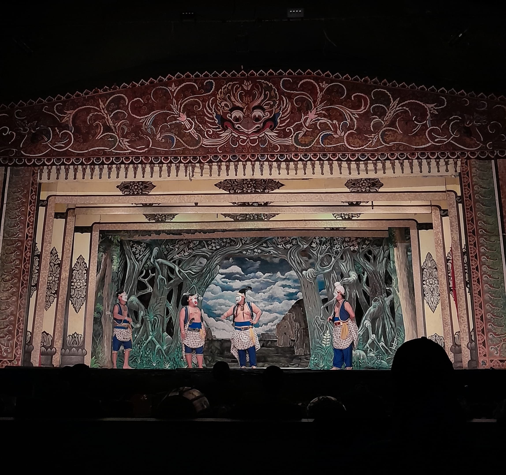
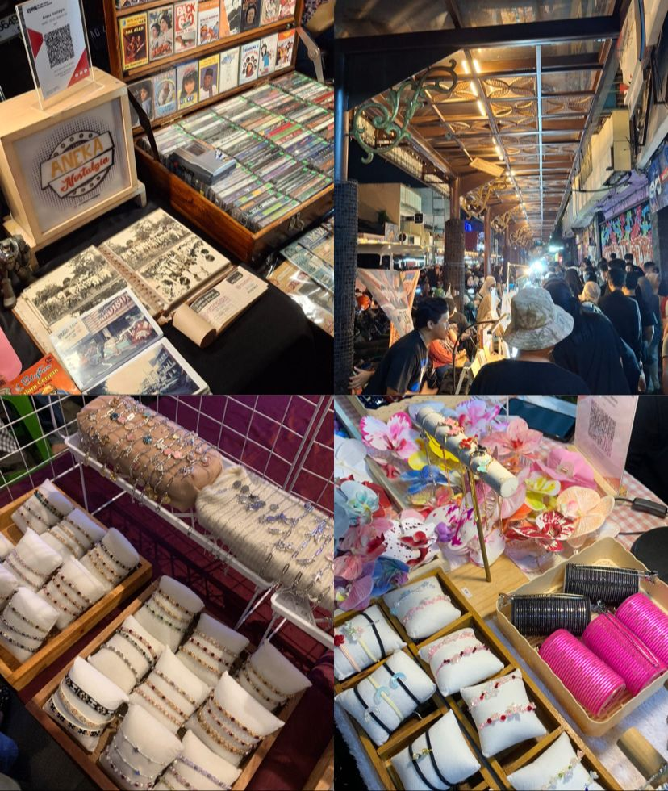

Hiburan/Event
Place To Go Solo: Kesenian Wayang Orang Sriwerdari

Wayang orang atau wayang wong merupakan sebuah drama tari traditional jawa yang tampil menggunakan kostum yang cukup rumit, gerakan eksprektif, serta diiringi dengan musik gamelan/tradisional. kesenian wayang orang ini sering kali berisi tentang sebuah cerita kisah nyata dari mahabarata dan ramayana. Pertunjukan wayang orang sriwerdari merupakan salah satu pertunjukan seni traditional dikota solo yang digelar malam hari ditaman sriwerdari kota solo dengan harga tiket masuk yang cukup murah yaitu Rp 20.000,00 kita sudah bisa menyaksikan pertunjukan wayang wong.
Perjunjukan Wayang wong yang diadakan pada hari Rabu,11 juni 2025 pertunjukan malam itu bertemakan tentang kisah nyata dari mahabarata yang diolah dengan sedikit sentuhan khas dari kota solo. Di setiap pertunjukan wayang wong tidak hanya ditampilkan dengan bahas jawa saja tapi juga ditampilkan terjemahannya dalam bahasa indonesia di layar proyektor sehingga memudahkan penonton memahai alur ceritanya. Selain itu pertunjukan wayang wong berdurasi 2-3 jam namun pertunjukan tersebut dikemas dengan menarik dan penuh guyonan sehingga penonton tidak merasa bosan/jenuh saat menonton.
Hiburan wayang wong sriwerdari tidak hanya menawarkan hiburan saja tetapi juga memberikan sebuah pembelajaran atau nilai nilai kehidupan yang dapat kita ambil. Pertunjukan pertunjukan wayang wong sriwerdari sudah dijadwalkan pertunjukannya dan bisa kita lihat diakum instagramnya yaitu @wayang_orang_sriwerdari.
Ditulis oleh: Vita Devi Rahmawati
Night Market : Suasana Weekend di Kota Solo

Suasana weekend di kota solo semakin seru dengan ada nya night market atau bisa disebut juga pasar malem yang ada di Jl. Diponegoro, Keprabon, Kec. Banjarsari, Kota Surakarta, Jawa Tengah atau sering juga disebut gatsu merupakan sebuah pasar yang beroprasi pada malam hari yaitu malam sabtu dan malam minggu, night market tersebut mulai buka pada jam 18.00 WIB. Night market sendiri merupakan sebuah pasar yang beroprasi pada malam hari dan sering kali menjadi daya tarik wisata karena suasananya yang unik serta berbeda dengan pasar pada umumnya.
Didalam night market yang ada dikota solo tersebut menawarkan berbagai macam barang dagangan dari makanan dan minuman khas kota solo, snack, baju-baju batik,jadul danmoderen juga tersedia. Berbagai macam aksesoris dari gelang, kalung, jepit rambut dan cincin. Selain itu kita juga bisa meminta riquest model aksesoris sesuai yang kita inginkan seperti saat membeli gelang kita bisa riquest nama yang akan ditulis, serta ada berbagai macam kerajinan khas kota solo.
Selain itu kita juga bisa menikmati hiburan musik dan seni yang ada sambil menikmati angin malam dikota solo. Night market tidak hanya didatangi oleh anak anak kecil saja tapi banyak orang tua, anak muda solo dan perantau yang ada dikota solo khususnya mahasiswa mahasiswa berbagai universitas yang ada disolo untuk menikmati suasana santai dimalam hari.